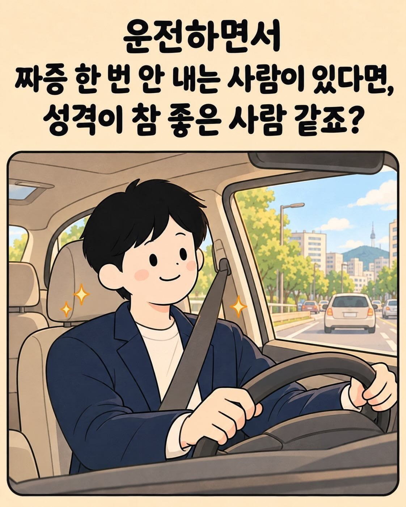
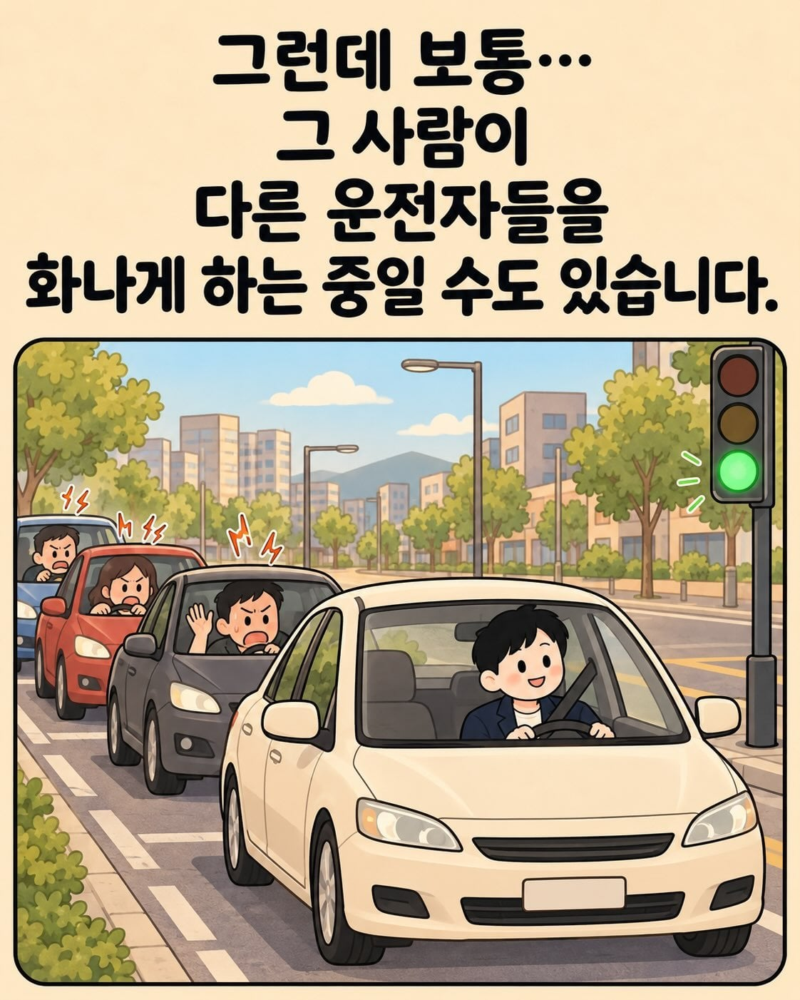

과속충들 생각이 점점 미쳐가는구나
아직 운전이 무서운 초보라 속도를 잘 못내요.. 50 적혀있으면 50 미만으로 달리고 70 적혀있으면 70으로 달림
잘하고 있네. 참고로 계기판 보다 5km 정도는 더 빨라도 무방해.
거리마다 다르지만.. 시내바리에선 존나 늦어져도 10분 늦어짐 사고같은거 아니라면.. 난 그래서 걍 20분 전에 보통 출발함..그러면 걍 양보도 하면서 여유롭게 운전 씹가능
다른새끼가 교통 좀 막히게 운전해도 노인넨가 병신인가 허허 하면서 가짐..
팩트는 공적으로 과속은 하지 말라고 하지만 저속하지 말라는 말은 없다는 것임 교통흐름 어쩌고 답답해 죽는 거는 그저 개인의 문제일 뿐
난 초보운전때부터 형님 형님하는게 습관이 들어서
내 실수로 빵 듣는다? -> 아 형님 죄송함돠~! 살펴가십쇼
앞에서 그지같이한다-> 행님 와그라는교~ 아하 참 그르지맙시다~
끼어들기나 기타 매너한다-> 행님 오늘도 좋은하루 보내시고 집가실때 로또사시면 3등은 되실겁니다~
초보때 연수도 한번 받았는데 연수해주던 쌤이 ㅈㄴ 웃더라 ㅋㅋㅋㅋㅋㅋ 처음엔 아는지인인줄 알았다고
나는 규정속도로 가고 있는데 뒤에서 빵빵거리며 ㅈㄹ하던 시키 생각나네
그런놈 있으면 뒤에 붙게만들고 가생이에서 급발진해서 돌빵매겨줌
웨이브 치듯이 뒷차들이 앞지르고 있으거면 문제 있는거임.
딴건 모르겠지만 운전면허 따는 과정을 좀 디테일하고 고난이도로 올려야 하는게 맞다고 본다.
도로위에서 돌발상황 발생시 대처나 특수한 경우 어찌 처리하고 운전해야 하는거 말야.
후진s자 부활.
빙판 드리프트 추가
빙판드리프트는 요즘차는 사이드 땡기는 식이아니라 힘듬ㅋㅋㅋㅋㅋ
ㅋㅋㅋㅋㅋ수동으로 봐야함
개씹새끼가 많지 저런 경우는
ㅇㅇ 내 앞으로 계속 칼치기 들어오는거면 문제있는거 맞음 어쩌다 한두차는 ㅇㅋ
근데 계속 칼치기 들어오면 너가 범인임
별개로 시내에서 가뜩이나 신호 짧아 뒤지겠는데 차 2~3대 들어갈 공간 확보하고 신호대기하는 새기들 가끔 보이는데 뺨때기 마려움
그리고 차선 2개 3개 한번에 점프뛰어서 차선변경하려는 색기들 몇미터 더가면 유턴차선인데 그게 왜 어려운지 이해 못함 그런색기들은 보이는족족 신고함
연속차선변경 자체로 과태료물리지는 않음 상식적으로 사고유발 가능성있는거만 신고했을거고 처벌여부도 문자오니까 알겠지만
2대만 들어가도 버스하나길인데 개미친놈이네 ㅋㅋ 그정도는 욕먹어도 되는거 맞긴함
앞차가 느리게 가는건 뭐 어쩔수없다고 봄. 뒤에있는 내가 뭘 할 수 있을까.
근데 옆차로에서 달리는 차들이 하나 둘 앞차를 가로질러서 가버리면 그때부터 화가 나. 죽이고싶어.
근데 더빡치는건 열받아서 추월하려고하면 그새끼도 속도 올려서 추월 못함.
진짜 개죽여버리고싶어
넌 운전하면 안되겠다
ㄹㅇ 만악의 근원임
운전이 스트레스가 가득한 환경인건 맞는데 ㅋㅋ 나와보면 양보도 많이 해주더라
제일 빡치는건 신호대신 스마트폰 보는 씹새끼들임 걍뒤졌으면좋겠음
진짜 존나 쳐 느리게 가길래 차선 옮겨서 추월하면서 보니까 폰 보고 있더라 ㅋㅋㅋ
난 화 안내고 조곤조곤 말하는데.. 어머니 돌아가셨나보네~ 이런식으로..
내가 운전하면서 제일 많이 하는소리
아이구~난리났네 난리났어
속도표지판 맞춰다니는 사람들 50 맞춰서 안다니고 40~50 왔다갔다하면서 개대충운전하더라고 그냥 내 경험상 뒤에서 따라다니다보면 그러더라
40-50이면 양반이네!
응 ㅋㅋㅋㅋ 양반인 편인데 뒤에서 따라다니다보면 자꾸 속도 왔다갔다해서 좀 짜증나
ㄹㅇ.... 갠적으론 정속 반절로 가는 친구들보다 좋은거가타
화내도지랄 안내도지랄이냐
이런걸 만들어야 본인이 좆병신인데 재도 병신이라고 심리적 위안을 삼을 수 있음
나보다 느리면 멍청이 나보다 빠르면 미친놈 이두개 밖에 없는 세계관
60도로에서 60 50도로에서 50으로만 가도 양반임
차량이 사람 판단하기 진짜 좋음 술쳐먹인거보다
1. 고속도로 1차선 점유 = 기본이 이기적인고 타인의 고통을 무시하는 성향
2. 국도라고 느리게 달리면서 1차선 점유하면서 차량통행 씹창내는놈 = 법적으로 문제없다면 내가 뭔짓을해도 당당한사람
3. 기본이 과속인놈 = 성격급한놈
4. 1차선에 크루즈 컨트롤 걸고 교통상황 재대로안보는놈 = 사이코패스
5. 뭐만하면 클락션 누르면서 시비거는놈 = 성격이 매우 폭력적인 사람
6. 1차선 과속하면서 지도 점령중이면서 지보다 더빠른놈 등장하면 차선 안비켜주는놈 = 이기주의자 + 사이코패스 무조건 피해야할 미친놈
운전못하는거랑 그냥 성격이 미친놈 좀만하면 구별가능하고
진짜 운전이야말로 본성격이 나오는 케이스라고봄 ㅋㅋ
5번애들있지 옆에가서 차안에서 짹짹거리지 말고 어디 조용한데 가서 남자답게 싸우던지 차에 칼 있는데 허벅지에 서로 칼 한방씩놓던지 합시다 하면 대부분 갈길 가거나 따라오는척 하다가 도망감.
ㅇㅈ
도로마다 제한속도로 달리면 문제없는거 아님? 100이면 100으로 달리고 50이면 50으로 달리고
ㅋㅋㅋㅋㅋㅋ 원래 운전할땐
나보다 빠르면 미친놈이고
나보다 느리면 답답한놈이지
ㄴㄴ 나보다 느려도 미친놈임ㅋㅋㅋ
맞는말인대 나보다 빨리가는 새끼들은 도파민증독 정신병자새끼들이고 나보다 느리게 가는 굼벵이 새끼들은 면허반납하고 자전거나 타야되는 병신새끼들임
제일 좇같은게 늦게가서 추월하려하면 그땐또 안껴줄려고 속도올림
진짜 그 때 개스트레스 받음 ㅋㅋㅋ 진짜 씨밸럼들임
정차구간에 안전거리 둔다고 거리두고 다른 차량 다 끼워주는 새끼가 ㅈㄴ빡침
안전거리 두고 있는건데 끼어드는 놈이 매너가 없는거 아닌가 머리가 있으면 뒷차한테 양해를 구해야지
여기 댓글만 봐도 이나라 운전문화가 왜이리 개판인지 알수있음
운전문화 개선이 시급하지.
1. 깜박이 제대로 켜라...
-> 깜박이도 제대로 안키고, 차선 변경하는 녀석들.. 깜박이 키고도 차선 변경하는 녀석들이 일류 드라이버다. 진짜로. 깜박이 켰는데도 안비켜줘요? 니가 존나게 막히는 구간에서 칼치기할려다 타이밍 놓쳤거나, 길 몰라서 갑자기 들어갈려는거 등등 뭔가 문제가 있어서 양보를 안해주는거지,... 그런게 아니면 사람들이 잘 양보해준다. 90%이상은.
2. 터널이나 야간운전 때, 전조등, 후방등 좀 켜라... 하이빔은 좀 삼가하고...
-> 터널 안에서 갑자기 어두워져서 속도 느리면, "아 늙어서 노안이 생겨서 적응하는데 갑갑하시겠구나..." 하는데, 전조등, 후방등도 안키고 달리면, 다크템플러세요...? 니 혼자 뒈지시지...?
3. 운전도 좆같이 하는데, 담배꽁초 같은 쓰레기 밖에다 쳐버리는 녀석.
-> 운전도 개좆같이 하는 녀석에다가 밖에다 담배꽁초 투척하는 새끼... 내 창 유리창에 맞아서 바로 신고 때려버림.
기초상식도 애미가 뒤졌는지 알려줘야한다는게 짜증이 난다. 3가지만 지켜도 운전 70%이상은 평화로워질듯.
최근에 운전하면서 욕한거는 주차하고 있던 새키가 깜박이도 없이 갑자기 주행중이던 내 앞으로 튀어나온거였다 시발롬아
이거 난데 ㅋㅋㅋㅋㅋㅋㅋ 그래서 2차선으로 가려고 노력함
운전할 때 제발 횡단보도 사람이 서 있으면 잠시 멈추고,
횡단보도 사람이 다 건널때까지 좀 기다려 주고,
우회전 할 때 제발 좀 잠시 멈추고,
전방 좌회전 차량이 신호 받아 오는거 보고 출발하고,
사람이 건너는지 확인하고,
앞에 사람이 천천히 걷는다고 경적 울리지 말고,
고속도로 1차로는 좀 비워놓고,
죄회전이든 우회전이든 니가 갈 방향으로 미리미리 깜박이 좀 넣고,
이정도만 해도 편안한 도로가 될거다.
이런 새끼들 꼴받으라고 빵빵 하든 말든 준법주행함 개꿀잼 ㅋㅋ